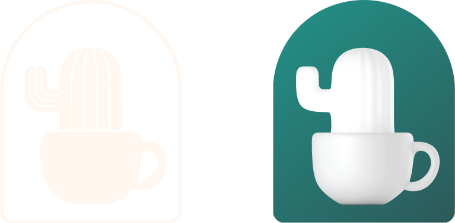

Laureando:
Alejandro De Sisto
Relatore:
Gaspare Buonsante
Elemento visivo dagli albori dell'umanità
“...segno che si imprime o si applica su un oggetto per distinguerlo e riconoscerlo...”
“Màrchio”, su treccani.it
Identità e riconoscibilità
Il progresso ci consente di infrangere gli schemi
Necessità di dinamismo: progettare marchi più umani.
Segno contraddistintivo e mutevole.
Statico, dinamico e dinamizzato.
Assi
Elementi dinamici
Moduli
Parametri
3D
Algoritmi
Matrice
Animazione
Concetto
Identità visiva
Metodologia
Riconoscibilità
Grazie